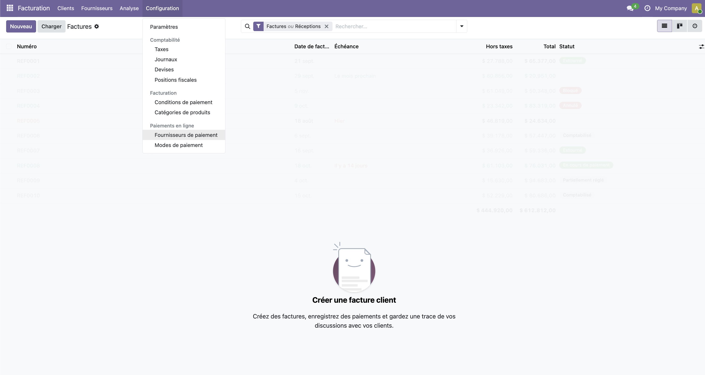
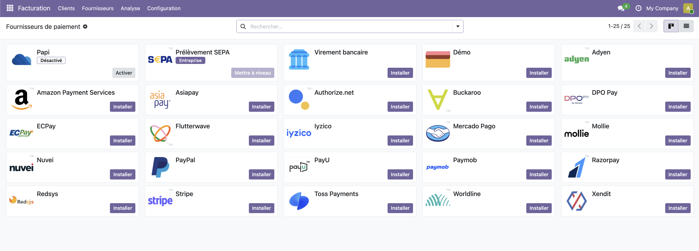
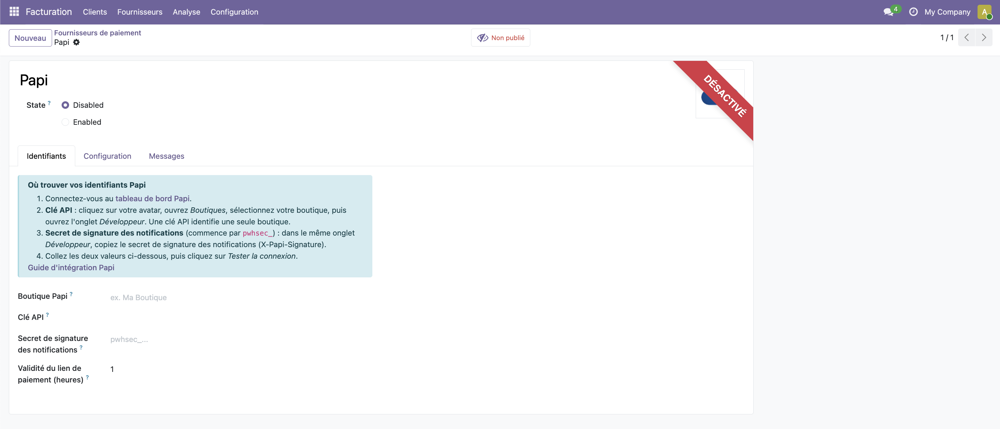
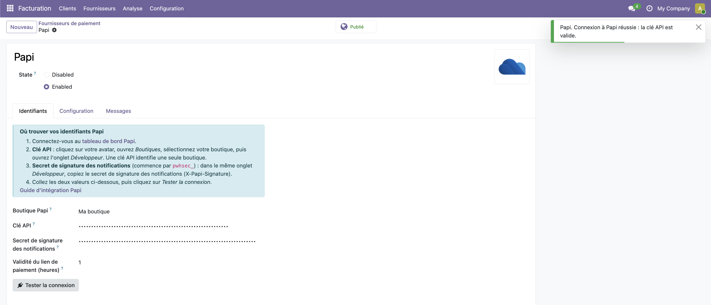
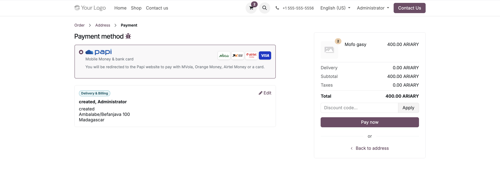

Fournisseur de paiement Papi pour Odoo
Acceptez les paiements MVola, Orange Money, Airtel Money et carte bancaire à Madagascar

Odoo 17 · 18 · 19 · 20 Testé sur Community MGA 95 tests automatisés LGPL-3
Papi, la solution de paiement made in Madagascar
Une seule intégration, tous les moyens de paiement locaux. MVola, Orange Money, Airtel Money et carte bancaire : encaissez vos clients sur votre site ou vos factures, suivez chaque transaction en temps réel dans votre tableau de bord et exportez vos rapports.
papi.mg · Tableau de bord · Documentation · support@papi.mg · +261 32 11 646 78
Un fournisseur de paiement natif pour Odoo
Papi apparaît à côté des autres fournisseurs de paiement d'Odoo. Vos clients choisissent Papi au moment du paiement, règlent sur la page sécurisée de Papi avec le moyen de paiement de leur choix, puis reviennent sur votre site. Les commandes sont confirmées automatiquement dès que Papi a confirmé le paiement.
- Paiement eCommerce, factures du portail client, devis en ligne et liens de paiement
- Bouton « Payer avec Papi » sur les factures et les commandes : un opérateur du back-office peut encaisser un paiement pour le compte du client
- MVola, Orange Money, Airtel Money et carte bancaire (BRED), au choix sur la page Papi
- Notifications serveur à serveur signées (HMAC-SHA256), protection contre le rejeu
- Statut toujours revérifié auprès de l'API Papi : le retour du client n'est jamais considéré comme une preuve de paiement
- Traitement idempotent : des notifications répétées ne confirment jamais une commande deux fois
- Rattrapage automatique des notifications perdues et des liens de paiement expirés
- Référence Papi, statut, moyen de paiement, motif d'échec et code d'erreur visibles sur chaque transaction
- Boutons « Tester la connexion » et « Vérifier le statut Papi » pour le diagnostic
- Secrets réservés aux administrateurs et jamais écrits dans les journaux
Opérationnel en quatre étapes
- Installez le paquet correspondant à votre version d'Odoo (
payment_papi; la passerelle pour les commandespayment_papi_saleest fournie avec). - Copiez deux secrets depuis dashboard.papi.mg (boutique → onglet Développeur) : la clé API et le secret de signature des notifications.
- Collez-les dans Facturation → Configuration → Fournisseurs de paiement → Papi, choisissez un journal bancaire, puis cliquez sur Tester la connexion.
- Passez le fournisseur sur Activé. Papi apparaît alors au moment du paiement et sur les factures.
Guide pas à pas avec captures d'écran
1. Ouvrir les fournisseurs de paiement
Dans l'application Facturation, ouvrez Configuration → Paiements en ligne → Fournisseurs de paiement. Ce même menu donne accès à Devises, nécessaire à l'étape 5.

2. Trouver Papi dans la liste
Une fois le module installé, Papi est la première carte de la liste, avec le badge Désactivé. Cliquez sur la carte Papi, ou sur son bouton Activer, pour ouvrir la fiche du fournisseur. Les autres fournisseurs sont les fournisseurs standard d'Odoo : ils ne sont pas nécessaires pour utiliser Papi.

3. Saisir vos identifiants Papi
Dans l'onglet Identifiants, un encadré bleu rappelle où trouver vos identifiants dans le tableau de bord Papi (Boutiques → votre boutique → onglet Développeur). Renseignez :
- Boutique Papi : le nom de votre boutique, pour votre repérage (ex. Ma boutique)
- Clé API : la clé API de la boutique (une clé identifie une seule boutique)
- Secret de signature des notifications : le secret
pwhsec_…utilisé pour vérifier l'en-têteX-Papi-Signature - Validité du lien de paiement (heures) : la durée de validité d'un lien de paiement, 1 heure par défaut
Tant que le fournisseur n'est pas configuré, le bandeau Désactivé s'affiche, l'état est Disabled et le statut sur le site est Non publié. Les onglets Configuration et Messages regroupent le journal, les pays et les messages affichés aux clients.

4. Tester la connexion et activer
Cliquez sur Tester la connexion. Odoo interroge l'API Papi avec votre clé et affiche un message vert : « Connexion à Papi réussie : la clé API est valide. » Passez ensuite l'état (State) sur Enabled : le bandeau disparaît, le logo Papi s'affiche et le statut sur le site passe à Publié. Papi est désormais proposé au moment du paiement et sur les factures. La clé API et le secret de signature sont masqués une fois enregistrés et ne sont lisibles que par les administrateurs Odoo.

5. Activer la devise MGA
Ouvrez Configuration → Comptabilité → Devises et vérifiez que le bouton de la colonne Actif est activé pour MGA (symbole Ar, Malagasy ariary). Dans l'exemple ci-dessous, MGA et USD sont actives. Pour l'eCommerce, créez aussi une liste de prix en MGA.

6. Ce que voit votre client au moment du paiement
Sur le site, à l'étape Paiement (Commande → Adresse → Paiement), Papi est proposé dans Mode de paiement sous la mention « Mobile Money & carte bancaire », avec les logos des moyens acceptés : MVola, Orange Money, Airtel Money et Visa (carte bancaire). Le message en dessous précise que le client sera redirigé vers le site de Papi pour payer avec MVola, Orange Money, Airtel Money ou une carte.
- Le récapitulatif de la commande affiche les montants en ARIARY (MGA), comme l'exige Papi.
- Le client vérifie l'adresse de livraison et de facturation, puis clique sur Payer maintenant.
- Le moyen de paiement (MVola, Orange Money, Airtel Money ou carte) se choisit sur la page sécurisée de Papi, et non dans Odoo.
- Après le paiement, le client revient sur votre site et la commande est confirmée automatiquement dès que Papi a confirmé le paiement.

Ce que vous configurez
| Champ | Valeur à saisir |
|---|---|
| Clé API | La clé de votre boutique Papi (une clé = une boutique). Visible uniquement par les administrateurs Odoo |
| Secret de signature des notifications | La valeur pwhsec_… utilisée pour vérifier X-Papi-Signature |
| Validité du lien de paiement | De 1 à 596 heures (1 h par défaut) ; la transaction est annulée à l'expiration |
| Journal de paiement | Le journal bancaire qui reçoit les paiements Papi, utilisé pour le rapprochement |
| Pays / devises | Préréglés sur Madagascar et MGA ; videz le champ pays pour proposer Papi aux clients de tous les pays |
| État | Désactivé ou Activé (Papi n'a pas de sandbox : le mode Test d'Odoo n'est pas proposé) |
Nous contacter
E-mail
support@papi.mg
Téléphone
+261 32 11 646 79
Adresse
Lot VA 38 LC Bis Ambohidepona
Antananarivo, Madagascar
Support : docs.papi.mg · papi.mg